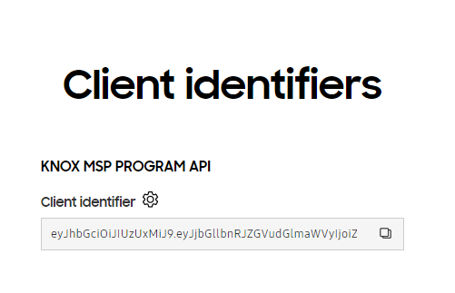

For MSPs — Generate an access token for your Knox MSP Program tenant
Last updated February 10th, 2026
Knox Cloud Authentication is our legacy authentication scheme. We recommend using Knox OAuth 2.0 Authentication for new integrations. Third-party portal providers who are integrating with Knox APIs on behalf of their customers must use Knox OAuth 2.0 Authentication.
Complete these steps to generate your access token using the Knox Cloud Authentication API and successfully call the Knox cloud service APIs in the course of your MSP activities.
-
Get access to Knox Cloud API:
-
Register for a Knox Partner Program account as a Managed Service Provider.
-
Contact your local Samsung representative or the Knox team through one of the following channels to request access:
- On the Knox Partner Program dashboard, click Support and submit the web form.
- On the Knox Developers dashboard, click Support > Technical Support.
-
-
Generate your key pair on the Knox API Portal:
-
On the Knox Developer Portal, click Knox Cloud API Portal.
-
Click Download to download your public and private key pair JSON file. This JSON file only needs to be generated once and contains the following information:
Key Description Public key Key that’s sent in the body of the accesstokenREST API request and stored by Samsung Knox to validate signed requests.Private key Key that should be stored and never revealed. This key is used for signing the Client Identifier and the access token returned by the REST API call. This key isn’t stored by Samsung Knox and we’ll never request it from you.
-
-
Click GENERATE CLIENT IDENTIFIER under Knox MSP API. This unique identifier only needs to be generated once unless:
- Privileges need to be changed.
- The Client Identifier is lost or stolen.
In both cases, re-generating the Client Identifier invalidates the previous one.

-
Get the support files.
-
Sign your Client Identifier with the token utility. See the source code below on how to sign your Client Identifier. For more information on using this utility JAR, see the included README file in the JAR file download package.
-
Generate your access token by calling the accesstoken REST API with your signed
clientIdandpublic key. The signed Client Identifier should be set as the value toclientIdentifierJwtin the request body of the accesstoken REST API. You can also set the token valid time between 1 — 30 minutes. The valid time is set to 30 minutes by default.For example:
-
Sign your
accesstokenwith your private key, using the utility JAR file as seen below.The signed
accesstokenexpires after its valid time runs out. Once that happens it returns the403225error code. -
Enter your access token in the
x-knox-apitokenheader parameter of your Knox cloud service API request. See the API reference of your Knox cloud service for details. When you call a Knox cloud service API on behalf of your managed customers, you must include thex-wsm-managed-tenantidheader parameter in your request, which identifies which customer you are managing with the API. Use your managed customer’s ID as its value, which is found on the Customers page on the Knox MSP Portal.
Here is an example of how to detect when the access token expires, get a fresh access token, and call a Knox Cloud Service API again.
Is this page helpful?